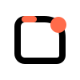

01. Breeze Corners
Closest to the screenshot metaphor. Four soft crop corners keep the shape familiar, while the accent dot makes the icon feel alive instead of static.
Six directions built around one constraint: a logo that still reads at very small sizes, feels rounded and friendly, and mixes screenshot framing with instant capture.
Closest to the screenshot metaphor. Four soft crop corners keep the shape familiar, while the accent dot makes the icon feel alive instead of static.
The strongest mix of “capture” and “quick”. The rounded capsule reads like motion, and the offset dot lands as the captured moment.
More dynamic and slightly more brand-like. The orbit introduces movement without making the symbol busy.
A softer app-window silhouette. It feels dependable and product-like, but it is less sharp than the corner-led marks at tiny sizes.

The brightest and boldest option. It pushes the accent color harder and feels more playful, though it is slightly less neutral.
The most approachable one. The curve softens the whole mark and gives it a human tone, but it trades away some precision.
Start from 02. Swift Corners. It is the cleanest primary logo for your brief. It keeps the crop-corner screenshot cue, but the center shape gives it speed and a bit of brand memory. If you want a more literal backup, keep 01. If you want a more expressive marketing variant, keep 03.